评级说明
配套视频：【命运 2】购物清单 紫枪部分杂谈
在不同场景下，不同武器的推荐分级会出现变化。主要区分场景：高难宗师、副本清怪／机制、副本输出。伤害 DPS 参考武器框架页。
T0：无替代性，独一档
T1：强力，不错的选择
T2：能用
T3：一般
T4：不建议使用
为了更精细化评级，会出现 T0.5／T1.5 的小数点评级。评级只是为了提供衡量强度的标准，请勿上纲上线。不会出现 PVP 枪，不会出现基本没有用途的枪。
如何衡量一把武器的价值？
清怪／高难宗师等：
①武器形态优秀，对精准伤害要求不高
②武器伤害合格
③武器弹药经济优秀：弹药生成属性高，每盒弹药总伤高
④功能性：技能回转（超凡／大招），硬减软减获取，高频率 dot，辅助队友（奶枪／切割／疲惫）……
输出：
①伤害高：DPS 高，切换 DPS 高
②总伤高
③爆发高
④功能性：劫子弹，高频率 dot，技能回转……
冲击支撑如果不带神器废墟石板的不稳定神枪手和 NPA 的不稳定流动，则一定要和不稳定弹药 Perk 搭配。面对怪的 DPS 从高到低：手枪、手炮、自动步枪／脉冲／弓箭、斥候、微冲。在有 vog 套的情况下比起羸弱能量球会更倾向带增伤 Perk。
动能武器：如果不反感 pve 打精准的话，可以尝试萤火虫+墓碑，萤火虫可以自动碎掉墓碑的冰块造成高伤范围爆炸，而萤火虫又是火属性武器伤害，就实现了一把枪触发预言 4 的抵抗 3 效果和回复 16% 近战手雷能量，携带药剂师或女王香炉的迎接风暴还可以同时射出减速弹片，也可利用寒风凛凛获取冰霜护甲。
通常动能和虚空是最佳的清怪传说白弹：虚空因为不稳定弹药给予的清怪能力，冲击支撑给予的生存能力，动能因为羸弱能量球+动能震颤和天生的对非战斗人员有天生的 15% 增伤。
自动步枪（奶枪）
类型评级 T0。猎人日志和 NPA 神器有自动步枪神器可获得抵抗 2 和增伤，自动步枪本身也是不错的白弹框架，奶枪又有作为工具枪的不可替代性
| 武器 | 图标 | 评级 | 框架 射速 |
属性 | 勇士 | Perk 三号位 | Perk 四号位 | 获取地点 | 评级理由 |
|---|---|---|---|---|---|---|---|---|---|
| 毫不迟疑 | 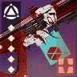 | T0 | 支援 600 | 烈日 | 医治 | 羸弱能量球 混沌重塑 | 苍白之心 | 医治 perk 给予自己和队友恢复 1，能和仁慈余烬联动。苍白之心起源特性加上反过载元素超充器快速回转火大招 | |
| 迪凯特 02 | 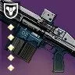 | T0 | 支援 600 | 冰影 | 医治 羸弱能量球 | 互惠 | 扭曲 | 医治+互惠一次给予自己和队友两层冰霜护甲的同时还有治疗，兼顾软硬减的优质奶枪 | |
| 光鳃之调 | 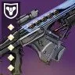 | T1 | 支援 600 | 电弧 | 医治 震颤反馈 | 超充弹匣 羸弱能量球 | 破碎王座 | 虽然给予的增幅只有五秒，但是可以续别的 15s 增幅，输出场景可用来触发 NPA 雷霆反击，震颤反馈+羸弱可以用来清怪 | |
| 永恒之尖 | T1 | 支援 600 | 虚空 | 羸弱能量球 互惠 冲击支撑 | 枯萎凝视 不稳定弹药 | 永恒沙漠（史诗） | 没有医治，一次给队友 1/3 的虚空盾太少了。枯萎凝视和羸弱能量球有一定功能性 | ||
| 金刚磐石 | T2 | 支援 600 | 缚丝 | 切割 互惠 | 能量球 | 仄 | 由于给的是拆解而不是织造铠甲成为功能性最差的奶枪，新版 T5 反而把切割取消了只能仄 roll |
自动步枪
类型评级 T0。自动步枪无论伤害还是手感都是中上级别，给到最高评级是因为猎人日志和 NPA 神器有自动步枪神器可获得抵抗 2 和增伤，注意抵抗 2 需要 10 次自动步枪命中，所以射速越快触发越快，射速高有天生优势
| 武器 | 图标 | 评级 | 框架 射速 |
属性 | 勇士 | Perk 三号位 | Perk 四号位 | 获取地点 | 评级理由 |
|---|---|---|---|---|---|---|---|---|---|
| 红衣威尔 | 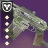 | T0 | 适配 600 | 动能 | 羸弱能量球 | 动能震颤 | 欧洲无人区 | 反屏障，适配框架也是所有自动步枪中最优秀的框架。动能自带除以外战斗人员 15% 增伤。羸弱能量球+动能震颤是最合适的组合 | |
| 痛苦的饥饿 | T0 | 适配 600 | 虚空 | 冲击支撑 爆破专家 枯萎凝视 | 武器大师 狂暴 不稳定弹药 | 智谋 | 虚空属性武器是除动能之外最优秀的清怪属性。虚空自动步枪吃满了 NPA 神器 | ||
| VS 热电推进 | 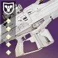 | T0.5 | 适配 600 | 电弧 | 羸弱能量球 | 震颤反馈 | 晚星之主 | ||
| 狙猎 Mk.47 | T1 | 轻质 720 | 电弧 | 震颤反馈 | 羸弱能量球 混沌重塑 | 赛雀联赛 | 轻质框架+轻量级起源特性跑起来很快 | ||
| 鲁莽神谕 | 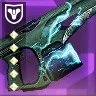 | T1 | 速射 720 | 虚空 | 维度偏移 不稳定弹药 | 混沌重塑 冲击支撑 | 众神殿 | 众神殿版本 perk 池比花园版本好，起源特性优秀 |
手枪
类型评级 T0。伤害最高的白弹类型。可惜没有优秀的产球枪
| 武器 | 图标 | 评级 | 框架 射速 |
属性 | 勇士 | Perk 三号位 | Perk 四号位 | 获取地点 | 评级理由 |
|---|---|---|---|---|---|---|---|---|---|
| 袖珍卫士 | 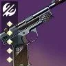 | T0 | 动态热量 360 | 虚空 | 冷却饰品（vog 套） 不稳定弹药 | 冲击支撑 狂乱 杀戮弹匣 | 无序边界 | 伤害最高的白弹中伤害最高的框架 | |
| 黄铜攻击 | T0 | 重型点射 325 | 虚空 | 冲击支撑 | 狂乱 不稳定弹药 | 世界 暗屋之声 | 不错的框架，原始特性能叠到 15% 减伤非常厉害 | ||
| 傍晚 SI4 | 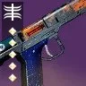 | T0.5 | 适配点射 491 | 烈日 | 治疗弹匣 即兴弹药 | 辉耀炽热 邪剑守则 燃烧野心 | 先锋 | 伤害最高的手枪。高到能轻松反 50 光屏障 | |
| 日心 QSc | T1 | 轻质 360 | 烈日 | 治疗弹匣 | 腹背受敌 辉耀炽热 狂乱 | 世界掉落 | 框架还行，轻质跑得快 | ||
| 难以逾越 | T1.5 | 精密 260 | 虚空 | 羸弱能量球 | 腹背受敌 不稳定弹药 | 枪匠兑换 凯尔之陨 | 最差的框架但是是理论白弹最快产球 | ||
| 无名之秋 | T1.5 | 轻质 360 | 电弧 | 羸弱能量球 | 福特子弹 腹背受敌 狂乱 | 熔炉 |
微型冲锋枪
类型评级 T1。尽管作为伤害最低的白弹，但他是最快的羸弱能量球触发器，手感优秀受到多数人青睐
| 武器 | 图标 | 评级 | 框架 射速 |
属性 | 勇士 | Perk 三号位 | Perk 四号位 | 获取地点 | 评级理由 |
|---|---|---|---|---|---|---|---|---|---|
| 多机系统 CCX | 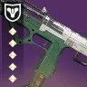 | T0 | 轻质 900 | 动能 | 羸弱能量球 | 动能震颤 | 铁旗 | 唯一的 900 羸弱动能震颤微冲 | |
| 岁时之巅 | T0 | 轻质 900 | 烈日 | 羸弱能量球 治疗弹匣 | 混沌重塑 燃烧野心 辉耀炽热 | 至日 | 羸弱能量球+混沌重塑和优秀的特克斯厂起源特性让他成为副手最优秀的微冲，手感优秀，perk 池豪华，燃烧野心是给松身裤火猎的特殊选择 | ||
| 不可饶恕 | T0 | 攻击 720 | 虚空 | 羸弱能量球 不稳定弹药 | 混沌重塑 冲击支撑 | 二象性 | 虚空属性有许多虚空相关神器选择，攻击框架本身也是微冲伤害最高的框架，起源特性加填装，弹药生成略低 | ||
| 驯顺 | 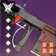 | T0 | 轻质 900 | 动能 | 动能震颤 | 混沌重塑 | 门徒 | 动能震颤+混沌重塑伤害很高，起源特性可以回血 | |
| 隐士 | T0 | 轻质 900 | 虚空 | 冲击支撑 | 混沌重塑 武器大师 不稳定弹药 | 猛攻 | 起源特性可回转手雷能量 | ||
| 紧急求生包 | T0 | 适配 900 | 虚空 | 羸弱能量球 冲击支撑 | 狂乱 集体行动 不稳定弹药 | 智谋 | |||
| 越界 | T1 | 轻质 900 | 电弧 | 福特子弹 | 狂乱 震颤反馈 | 熔炉 | 福特子弹+狂乱的快速换弹组合 | ||
| 迫近 | 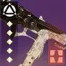 | T1 | 轻质 900 | 缚丝 | 切割 | 混沌重塑 | 救赎的边缘 | 切割很独特 | |
| 帕拉贝伦 | 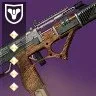 | T1 | 适配 900 | 烈日 | 治疗弹匣 回转弹药 | 羸弱能量球 集体行动 辉耀炽热 | 欧洲无人区 | 起源特性疲惫爆炸很优秀。回转弹药可以破 50 光屏障 | |
| 判决 | 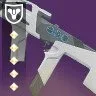 | T1 | 精密 600 | 动能 | 羸弱能量球 | 动能震颤 | 预言 | 虽然是最差的精密框架。但是动能属性和起源特性增伤弥补了这一点 |
手炮
类型评级 T1。手炮是伤害等级第二高的白弹，手感不错，中距离射程也是其优势之一，有最好的劫子弹工具枪和所有武器中最高伤害的白弹
| 武器 | 图标 | 评级 | 框架 射速 |
属性 | 勇士 | Perk 三号位 | Perk 四号位 | 获取地点 | 评级理由 |
|---|---|---|---|---|---|---|---|---|---|
| 星狐座 | T0 | 精密 180 | 冰影 | 高爆载荷 | 边打边劫 | 破碎王座 | 最常使用的边打边劫工具枪。手感射速优秀，起源特性还加操作，主手白弹边打边劫的最优选 | ||
| 绽放兰花 | T0 | 适配 140 | 虚空 | 冲击支撑 杀戮弹匣 边打边劫 即兴弹药 | 高爆载荷 武器大师 狂暴 不稳定弹药 | 竞技场 | 豪华的 perk 池和起源特性，虚空属性让他成为最强的白弹清怪手炮 | ||
| 克洛塔之语 | T0 | 精密 180 | 虚空 | 冲击支撑 爆破专家 | 狂乱 武器大师 不稳定弹药 | 克洛塔的末日 | 180 的最佳之选 | ||
| 无爱 | T0 | 重型点射 257 | 缚丝 | 高强度备弹 快速命中 | 元素磨砺 | 分离教义 | 虽然幸运裤已不复往日荣光，顶级的 perk 池和顶级的原始特性让他成为最好的双发手炮，通常与艾莲娜一起使用，缚丝属性适合废墟石板神器 | ||
| 艾恩伍德 03 | 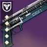 | T0 | 散射 100 | 虚空 | 冲击支撑 威胁移除器 | 腹背受敌 集体行动 武器大师/雪上加霜 不稳定弹药 | 扭曲 | 最高 DPS 框架的虚空属性，perk 池优秀 | |
| 金质消除者 | T0 | 散射 100 | 动能 | 威胁探测 威胁移除器 盗墓者 | 战壕炮管 级联点 | 试炼 | 作为动能属性是最高的散射手炮伤害 替代：三冠得主（守护者游戏） | ||
| 后代 | T1 | 精密 180 | 电弧 | 福特子弹 | 高爆载荷 狂乱 | 深岩墓室 | 伏特+高爆的组合非常适合清怪 | ||
| 野兽国度 | 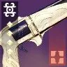 | T1 | 适配 140 | 电弧 | 换档 | 集体行动 | 最后一愿 | 仅限药剂包幸运裤的玩法 | |
| 命运终结者 | T1 | 适配 140 | 动能 | 高爆载荷 动能震颤 | 狂乱 元素磨砺 萤火虫 | 玻璃拱顶 | 手感好，perk 池和起源特性优秀 | ||
| 扎乌利的克星 | T1 | 适配 140 | 烈日 | 高爆载荷 转向（王陨版本） | 混沌重塑 辉耀炽热 | 众神殿 国王的陨落 | 分为众神殿和王陨两种版本，众神殿起源特性提供额外的弹药生成和面板，王陨起源在有盟友时有额外填装效果，众神殿版本同时拥有两种起源特性，王陨版本有转向 | ||
| 改装 B-7 手枪 | T1.5 | 动态热量 180 | 冰影 | 萤火虫 | 墓碑 | 无序边界 | 替代 鹰月/庄严追忆 | ||
| 死从天降 | T2 | 适配 140 | 动能 | 高爆载荷 | 羸弱能量球 | 先锋 | 高爆+羸弱能 4 下产能量球，但除此之外没什么用了，伤害不够看 |
脉冲步枪
类型评级 T1.5。脉冲步枪的伤害中等偏上，适合中远距离的清怪环境，由于方便打精准伤害多用于叠加单人特工层数
| 武器 | 图标 | 评级 | 框架 射速 |
属性 | 勇士 | Perk 三号位 | Perk 四号位 | 获取地点 | 评级理由 |
|---|---|---|---|---|---|---|---|---|---|
| 乔科斯的长剑 | T0.5 | 重型点射 324 | 虚空 | 冲击支撑 边打边劫 爆破专家 | 亡命之徒 杀戮弹匣 枯萎凝视 不稳定弹药 | 熔炉 | 伤害最高最好的脉冲框架，perk 池优秀，边打边劫+枯萎凝视的组合可作为工具枪 | ||
| 格网队长 | 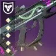 | T1 | 速射 540 | 虚空 | 冲击支撑 爆破专家 | 狂乱 铤而走险 不稳定弹药 | 世界 班西 | 框架优秀，手感非常舒服，perk 池优秀 | |
| 唠叨龙骨 | 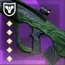 | T1 | 轻质 450 | 动能 | 羸弱能量球 | 动能震颤 | 众神殿 | 最好的羸弱+动能脉冲，优质起源特性 | |
| 作废 | 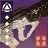 | T1 | 重型点射 324 | 烈日 | 治疗弹匣 爆破专家 燃烧野心 | 混沌重塑 辉耀炽热 羸弱能量球 | 救赎的边缘 | 伤害最高最好的脉冲框架，perk 池优秀 | |
| 莱德瑞克斯穿甲剑 | 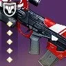 | T1.5 | 传承 PR-55 450 | 冰影 | 萤火虫 爆破专家 | 墓碑 狂乱 元素磨砺 | 熔炉 | 萤火虫+墓碑，传承 PR-55 框架的 AA 很高适合打头 |
弓箭
类型评级 T2。弓箭也是伤害中等偏上的武器类型，但是碍于需要不断的拉弓和较低的伤害转化效率通用程度不高
| 武器 | 图标 | 评级 | 框架 射速 |
属性 | 勇士 | Perk 三号位 | Perk 四号位 | 获取地点 | 评级理由 |
|---|---|---|---|---|---|---|---|---|---|
| 刺骨寒风 | 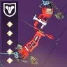 | T1 | 精密 | 动能 | 迷惑爆发 即兴弹药 | 小试牛刀 爆炸箭头 动能震颤 | 木卫二 | 迷惑爆发+小试牛刀在弓箭上真的是非常有意思而且有强度的组合，最好的弓箭框架 | |
| 恶意尖牙 | T1.5 | 轻质 | 冰影 | 墓碑 即兴弹药 小时牛刀 | 萤火虫 爆炸箭头 狂乱 | 竞技场 | 墓碑+萤火虫，弓箭的 AA 很高适合打头，顶级原始特性 | ||
| 牡鹿之角 | 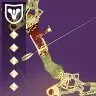 | T1.5 | 精密 | 电弧 | 小试牛刀 | 福特子弹 | 铁旗 | 小试牛刀+福特子弹 cos 三体坐观者 同类替代：救赎的边缘 | |
| 累积救赎 | 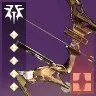 | T2 | 精密 | 动能 | 羸弱能量球 | 动能震颤 爆炸箭头 | 花园 | 羸弱能量球+动能震颤两发一个球，原始特性方便破屏障 | |
| 幸运星 | T2 | 轻质 | 虚空 | 冲击支撑 即兴弹药 小试牛刀 | 爆炸箭头 不稳定弹药 | 至日 | 没有优秀虚空精密弓的下位替代 |
斥候
类型评级 T3。倒数第二的伤害水平，适合远距离作战，唯一上场机会是作为劫子弹工具枪
| 武器 | 图标 | 评级 | 框架 射速 |
属性 | 勇士 | Perk 三号位 | Perk 四号位 | 获取地点 | 评级理由 |
|---|---|---|---|---|---|---|---|---|---|
| 允诺 | 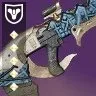 | T2 | 轻质 200 | 虚空 | 边打边劫 冲击支撑 | 高爆弹药 枯萎凝视 不稳定弹药 | 幽梦之城 | 轻质的高操作让他成为最合适的劫子弹斥候 | |
| 无视 | T2 | 速射 260 | 电弧 | 萤火虫 | 福特子弹 狂乱 | 分离教义 | 最好的框架和顶级原始特性 | ||
| 伏打阴影 | T2 | 平衡热量 260 | 电弧 | 震颤反馈 | 狂乱 | 平衡 | 不错的长弹匣输出能力 | ||
| 受托 | T2 | 速射 260 | 烈日 | 治疗弹匣 | 辉耀炽热 转向 燃烧野心 | 深岩墓室 | 最好的框架和顶级的手感 | ||
| 无感 | T2.5 | 精密 180 | 电弧 | 集体爆破 | 高爆载荷 | 竞技场 | 唯一还算可观手雷回转的白弹，高爆载荷能触发两次集体爆破，虽然是伤害最低的框架 |